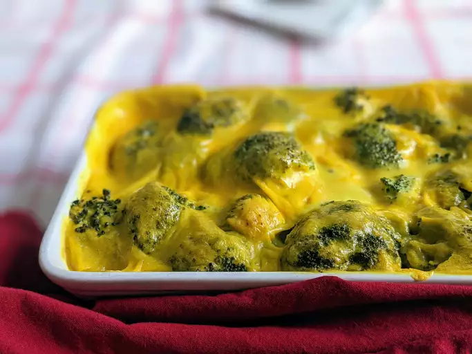

Broccoli-Cheese Casserole

Always a hit. I use 2 eggs to keep it moist.
My mom made this broccoli cheese casserole every Thanksgiving when I was little.
We kids could never get enough! If you have children or have some coming to visit you as guests this Thanksgiving,
I guarantee that they will eat (and enjoy) this veggie dish. It's also fabulous with a Christmas ham.
Ingredients
- 1 (10.5 ounce) can condensed cream of mushroom soup
- 1 cup mayonnaise
- 1 egg, beaten
steps
- Preheat the oven to 350 degrees F (175 degrees C). Butter a 9x13-inch baking dish.
- Whisk condensed soup, mayonnaise, egg, and onions together in a medium mixing bowl until combined.
- Place frozen broccoli into a very large mixing bowl and break it up if necessary; add soup mixture and mix well to coat. Sprinkle with cheese and mix well; spread mixture into the prepared baking dish. Season with salt, pepper, and paprika.